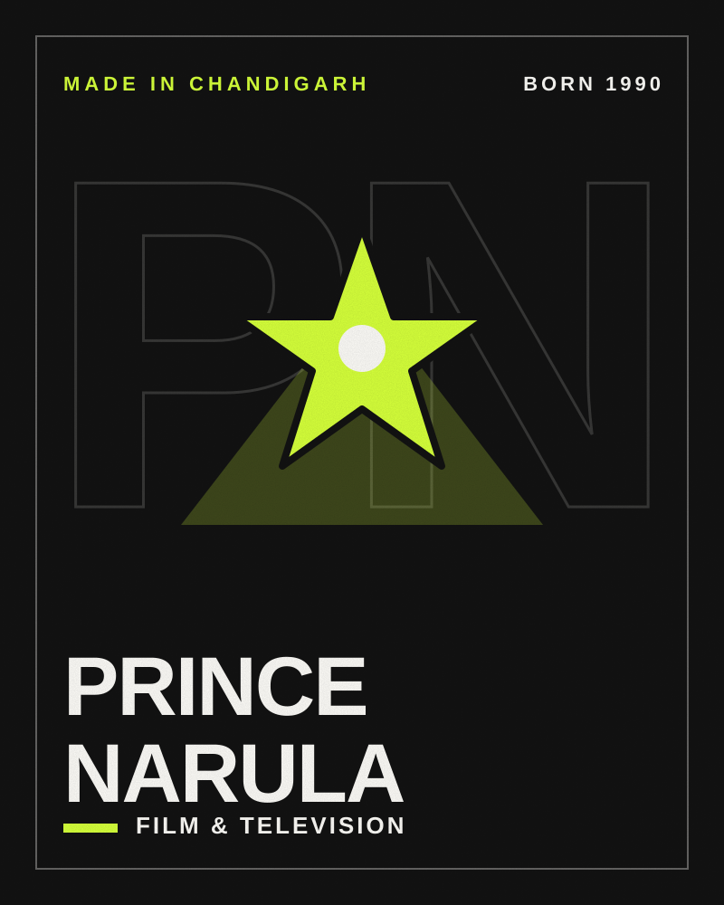
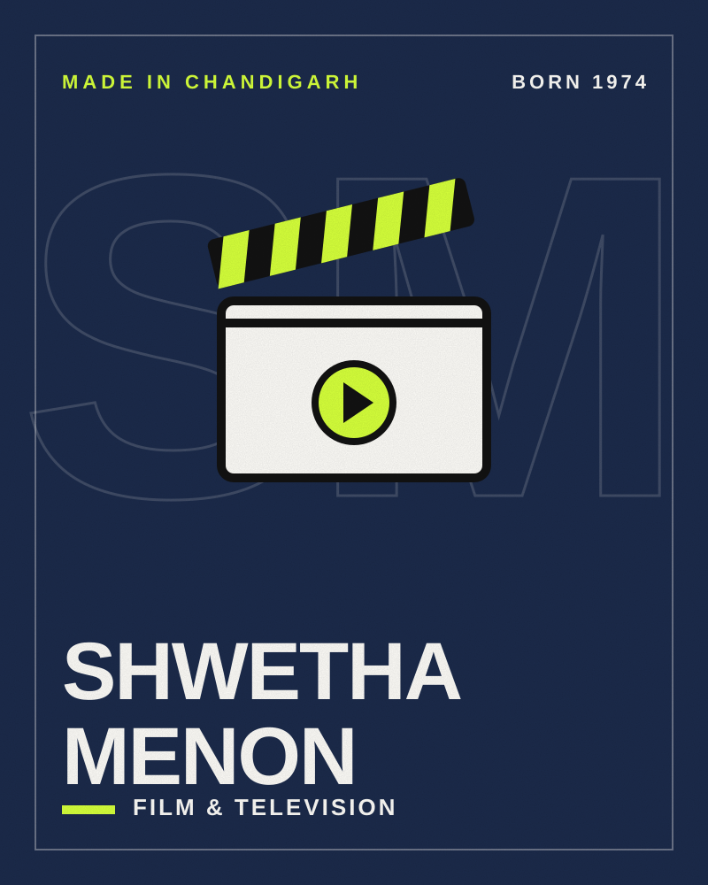

Film & Television · Made in Chandigarh
PrinceNarula
Reality TV champion, actor and singer
- Born
- BirthplaceChandigarh, India

- 4consecutive reality-show wins
- 2016Roadies Gang Leader since
Prince Narula is best known for an unusual record: winning MTV Roadies, MTV Splitsvilla, Bigg Boss 9 and Nach Baliye 9 back to back. He has also acted in serials including Badho Bahu and Naagin 3.
Four wins in a row
After finishing second runner-up in PTC Punjabi’s Mr. Punjab in 2014, he won Roadies X2 and Splitsvilla 8 in 2015, then Bigg Boss 9 — a hat-trick of wins — and later Nach Baliye 9 in 2019.
Acting and Roadies
He played wrestler Lakhan “Lucky” Singh Ahlawat in Badho Bahu (2016–2018) and Shaan in Naagin 3, and has been a Gang Leader on MTV Roadies since 2016.
Timeline
- 1990Born on 24 November
- 2014Second runner-up, Mr. Punjab
- 2015Wins Roadies X2 and Splitsvilla 8
- 2016Wins Bigg Boss 9; Badho Bahu begins
- 2018Naagin 3
- 2019Wins Nach Baliye 9
Honours
- Winner — MTV Roadies X2, Splitsvilla 8, Bigg Boss 9, Nach Baliye 9
Quick questions
Where was Prince Narula born?
Prince Narula was born in Chandigarh, India. He hails from Chandigarh, which Wikidata records as his birthplace.
When was Prince Narula born?
Prince Narula was born on 24 November 1990.
What is Prince Narula known for?
Prince Narula is known for Bigg Boss 9, MTV Roadies, Badho Bahu and Naagin 3.
What awards has Prince Narula received?
Honours include Winner — MTV Roadies X2, Splitsvilla 8, Bigg Boss 9, Nach Baliye 9.
More from Chandigarh

Film & Television · Born 1975
Mahie Gill
Actor (Hindi and Punjabi cinema)

Film & Television · Born 1974
Shwetha Menon
Actor, model and television anchor
Film & Television · Born 1984
Flora Saini
Actor and model

Film & Television · Born 1984
Ayushmann Khurrana
Actor and singer
This is an independent editorial profile compiled from public sources. Cityfluence is not affiliated with Prince Narula, and nothing on this page implies endorsement.